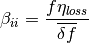

seapy.subsystems.subsystem.Subsystem¶
- class seapy.subsystems.subsystem.Subsystem(name, system, **properties)[source]¶
Bases: seapy.base.Base
Abstract Base Class for subsystems.
- __init__(name, system, **properties)[source]¶
Constructor.
Parameters: - name (string) – Identifier
- component (SeaPy.components.Component) – Component
Methods
__init__(name, system, **properties) Constructor. addExcitation(name, model, **properties) Add excitation to subsystem. Subsystem.df disable([couplings]) Disable this subsystem. enable([couplings]) Enable this subsystem. info([attributes]) Return dataframe. plot(quantity[, yscale]) Plot quantity. Attributes
SORT str(object=’‘) -> str average_frequency_spacing “ classname Name of class of the object. component conductance Conductance  .
.damping_term The damping term is the ratio of the modal half-power bandwidth to the average modal frequency spacing. dlf Damping loss factor of subsystem. enabled Switch indicating whether the object is enabled. energy Total energy in subsystem. frequency Frequency. impedance Impedance 
included Indicates whether the object is included in the analysis. linked_couplings_from linked_couplings_to linked_excitations mobility Mobility Y modal_density Modal density. modal_energy Class capable of containing spectral values. modal_overlap_factor Modal overlap factor. name power_input Total input power due to excitations. resistance Resistance  , the real part of the impedance .
, the real part of the impedance .soundspeed_group Group velocity in a subsystem. soundspeed_phase Phase velocity in a subsystem. tlf Total loss factor. wavenumber Wave number. - __init__(name, system, **properties)[source]
Constructor.
Parameters: - name (string) – Identifier
- component (SeaPy.components.Component) – Component
- component = None¶
Component this subsystem uses.
- damping_term[source]¶
The damping term is the ratio of the modal half-power bandwidth to the average modal frequency spacing.

See Lyon, above equation 12.1.4
- disable(couplings=False)[source]¶
Disable this subsystem. Optionally disable dependent couplings as well.
Parameters: couplings (bool) – Disable couplings
- dlf[source]¶
Damping loss factor of subsystem.
By default this is the loss factor of the material of the component.
- enable(couplings=False)[source]¶
Enable this subsystem. Optionally enable dependent couplings as well.
Parameters: couplings (bool) – Enable couplings
- linked_couplings_from = <generator object __get__ at 0x7f1bcc6b5f78>¶
Set of couplings in which the subsystem is in the From field.
- linked_couplings_to = <generator object __get__ at 0x7f1bcc6b5bd0>¶
Set of couplings in which the subsystem is in the To field.
- linked_excitations = <generator object __get__ at 0x7f1bcc6b5f30>¶
Set of excitations this subsystem experiences.
- modal_energy¶
Modal energy.